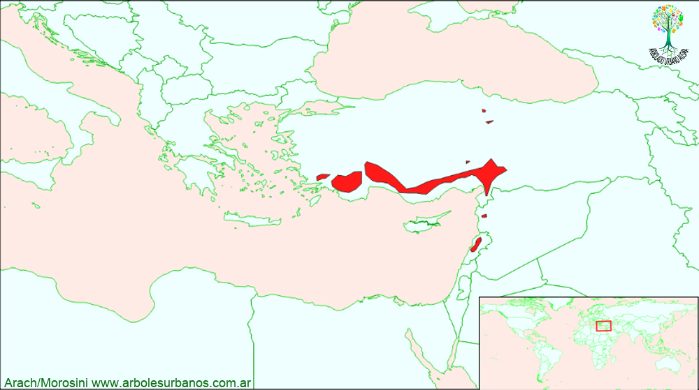

Click en las imágenes para ampliar

{kind=link}
{kind=link}
{kind=link}
{kind=link}
{kind=link}
- NOMBRE CIENTÍFICO
- Cedrus libanii
- FAMILIA BOTÁNICA
- Pináceas
- ORIGEN
- Crece a lo largo de la costa mediterránea del sur y suroeste de Anatolia, Líbano y en las alturas de la Aansariye Jebel en Siria. Estas dos poblaciones no se encuentran geográficamente conectados. También existen relictos en Turquía, cerca del Mar Negro. El área original de distribución natural se indica en el Líbano con alrededor de 500.000 hectáreas, que ahora es sólo de 2.000 hectáreas por la sobreexplotación y los conflictos bélicos. Se encuentra entre los 600-2100 m. sobre el nivel del mar, asociado a algunos pinos, abetos y enebros.
- DESCRIPCIÓN GENERAL
- Conífera siempre verde de entre 20 y 40 metros de altura y superando largamente los 2 metros de diámetro, de porte anchamente columnar, a extendido, aunque cuando jóvenes, los individuos tiene porte piramidal. De corteza pardo oscura, agrietada en pequeñas placas. Sus acículas son de hasta 3 cm de largo de color verde oscuro o verde gris
- ESTRÓBILOS
- Los masculinos son ahusados de hasta 5 cm de largo, verde azulados al principio, luego amarillentas, los femeninos son verde purpúreos , luego marrón claro, de forma doliiforme, erguidos, al madurar se desarma dejando solamente pegado a los tallos el eje central donde se intercalan las escamas y las semillas
- USOS
- Desde la antigüedad su madera, es duradera, aromática de color marron rojizo el duramen y amarillenta la albura, se la ha utilizado para la construcción de edificios y navios, siendo unos de los pilares de las economías de los pueblos tales como fenicios, egipcios y asirios. El dicho popular dice que el aserrín de el cedro auyenta las víboras por eso son lugares seguros la sombra de los cedros para dormir la siesta. Esta especie está en casi todas las colecciones de árboles importantes, se lo utilizó durante el siglo XVIII en los grandes parques, de ahí que se pueden encontrar grandes ejemplares, ay que es una especie muy longeva.
- REPRODUCCIÓN
- Se lo puede reproducir por semillas fácilmente, luego de cosechar las semillas se debe realizar una estratificación de 40 días, también algunos aconsejan la siembra de otoño.
- PARTICULARIDADES
- Es uno de los árboles más Citados en los textos sagrados judeo-cristianos y la Epopeya de Gilgamesh, además es el emblema de la bandera del Líbano